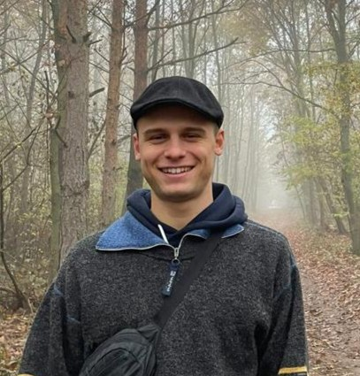

Personal Info
- nyikos.benjamin9@gmail.com
- +36202006456
- Hasfalvi street 11, Sopron, H-9400, Hungary
- Hungarian
- 29.09.1999
Education
-
Bachelor's Degree in Multimedia and Creative Technologies
Karel De Grote Hogeschool
Oct 2022 - Present
-
Associate Degree in Hospitality Management
International College of Tourism and Hotel Management
Oct 2020 - Jun 2022
Skills
- Teamwork
- Communication
- Attention to detail
- Interpersonal skills
- Problem-solving
Languages
- English - Fluent
- German - Very Good
- Hungariran - Native Speaker
Benjamin Nyikos
Summary
A highly motivated and dedicated individual with a passion for learning and a strong background in multimedia and creative technologies. Skilled in project management, programming, and design, with experience in hospitality management. Fluent in Hungarian and English (C1 level) and proficient in German (B2 level).
Work Experience
Waiter, Kelly's Irish Pub (Part-Time), Antwerpen
September 2022 - Present
- Ability to provide exceptional customer service and maintain a welcoming atmosphere for guests
- Strong communication skills and ability to work efiectively in a team environment
- Proficiency in handling cash transactions and operating a point-of-sale system
- Understanding of food and beverage menus and ability to make recommendations to guests
Hotel Animator, Georgioupolis Resort Aqua Park and SPA, Georgioupolis
June 2022 - September 2022
- Proven ability to create and deliver engaging and fun activities for guests of all ages
- Excellent communication and interpersonal skills to interact with guests and team members from diverse backgrounds
- Ability to work in a fast-paced environment and adapt to changing schedules and demands
- Strong organizational skills to manage and coordinate multiple activities and events
- Familiarity with sound and light equipment, and the ability to use them efiectively
- Proficiency in multiple languages, especially those commonly used by hotel guests around Europe
- Passion for providing exceptional customer service and enhancing guest experiences
- Creativity and imagination, with the ability to design and implement unique and memorable experiences for guests
Intern, Hotel Mörbischerhof, Mörbisch am See
June 2021 - September 2021
- Experience in a small hotel setting, with exposure to various aspects of the business, including reception, cleaning, waiting tables, and other duties as needed
- Ability to multitask and adapt to changing priorities and demands in a fast-paced environment
- Strong communication and interpersonal skills, with a friendly and welcoming demeanor toward guests and colleagues
- Proven ability to provide exceptional customer service and exceed guest expectations
- Familiarity with hotel operations, including check-in and checkout procedures, room maintenance, and inventory management
- Proficiency in handling cash transactions, managing reservations, and using a point-of-sale system
- Understanding of basic cleaning and hygiene standards, with a commitment to maintaining a clean and safe environment for guests and staff
- Ability to work independently or as part of a team, and take direction from supervisors as neededStrong work ethic, attention to detail, and a positive attitude.